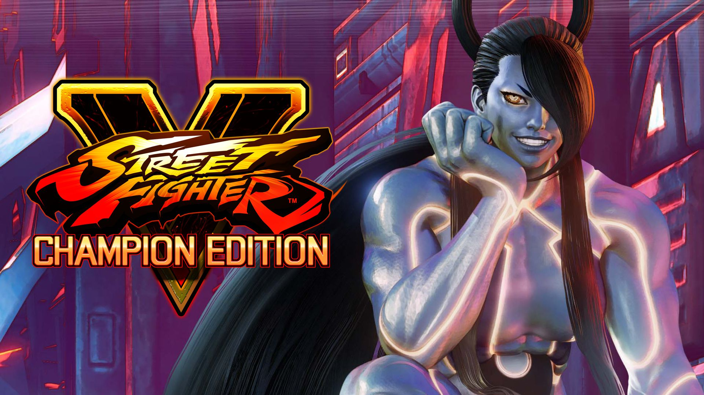

'Street Fighter V Champion Edition'
Street Fighter V: Champion Edition es un videojuego de lucha; desarrollado y distribuido por Capcom.Es la última versión de Street Fighter V y está disponible en PlayStation 4 y en formato digital para Steam desde el 14 de febrero de 2020. Anteriormente, desde el 18 de noviembre de 2019, los jugadores de Street Fighter V pudieron adquirir el kit de actualización que ofrecía acceso inmediato a todo el contenido de la Champion Edition según fuera estando disponible hasta el lanzamiento oficial que fue el 14 de febrero.
Street Fighter V Champion Edition parte con el objetivo de ser el mejor juego de lucha con esa experiencia que los fans deseaban ver desde el principio. No solo se busca reconquistar a los fans, sino ofrecer un pack brutal (e irresistible) de artículos de Street Fighter V pensando también en aquellos que disponen del juego e incluso quienes lo dejaron de tener.
Modos de Juego:
Todos los jugadores de Street Fighter V pueden disfrutar de los modos de juego, pero en lo referente a luchadores, trajes y colores (entre otras cosas) es necesario usar Fight Money (la moneda de juego) o dinero real. La nueva edición es, sustancialmente, un pack con prácticamente todo lo que Capcom ha sumado en el juego desde su lanzamiento.
- Modo Historia
- Duelo
- Modo Surpervivencia
- Entrenamiento
- Partida Igualada
- Partida Informal
- Sala de Combate
Una de las modalidades principales para jugar en solitario. A lo largo de un número reducido de combates, de dos a cuatro (en función de cada personaje) podemos conocer los motivos de Ryu, Chun-Li y compañía para pelear.
El clásico modo para dos jugadores offline. Es posible escoger entre diversas opciones típicas como personaje, escenario, etc.
Una opción ideal para demostrar nuestra habilidad. En esta modalidad tenemos que superar sucesivas rondas de combates cuya extensión y dureza dependen del nivel de dificultad elegido. De un combate a otro nuestra barra de salud no se regenera, pero podemos adquirir diversos potenciadores aleatorios (porciones de medidor EX, aumento de la fuerza, energía adicional, etc.) con los puntos que vamos obteniendo al combatir.
Ideal para practicar nuestras técnicas, golpes y combos, pudiendo escoger a nuestro personaje, visualizar los movimientos, elegir el rival, la actitud de nuestro adversario, etc.
Un modo de juego online en el que combatimos con puntos de liga en juego, pudiendo entrar en los listados de clasificaciones mundiales. Es posible escoger entre diversas opciones y buscar partidas con varios filtros, incluyendo si queremos jugar contra usuarios de PS4 y PC, el grado de calidad de conexión, etc.
Es una opción muy parecida a la anterior, pero en este caso las peleas no ponen en juego ni el rango de clasificación mundial ni los puntos de liga.
En esta opción es posible buscar partidas o crear una sala y crear nuestras propias reglas, es decir, determinar el número de rounds, tiempo límite, etc.

Street Fighter V es tremendamente sencillo de entender, pese a que dominarlo requiere toda una vida. Los personajes clásicos han ganado más identidad en cuestión de movimientos, ataques y se benefician mucho del sistema de juego. 'Street Fighter' siempre ha brillado a través de su modo Vs, y la Champion Edition ha perfeccionado ese aspecto, no solo a través de la referida capa de profundidad y el balance de luchadores, sino por el modo por equipos.